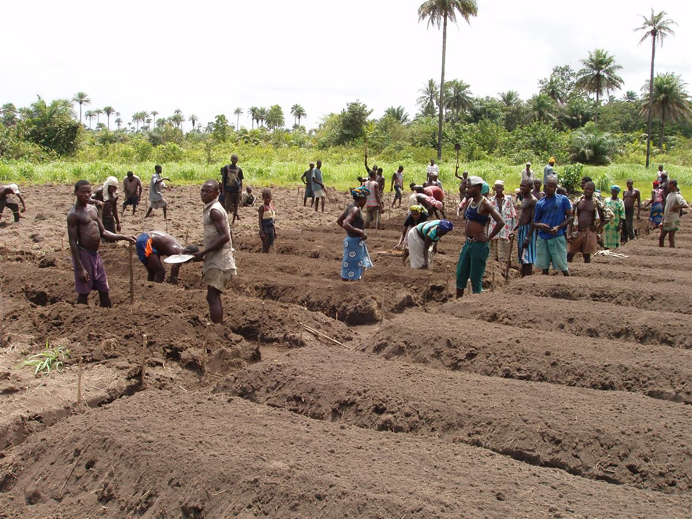
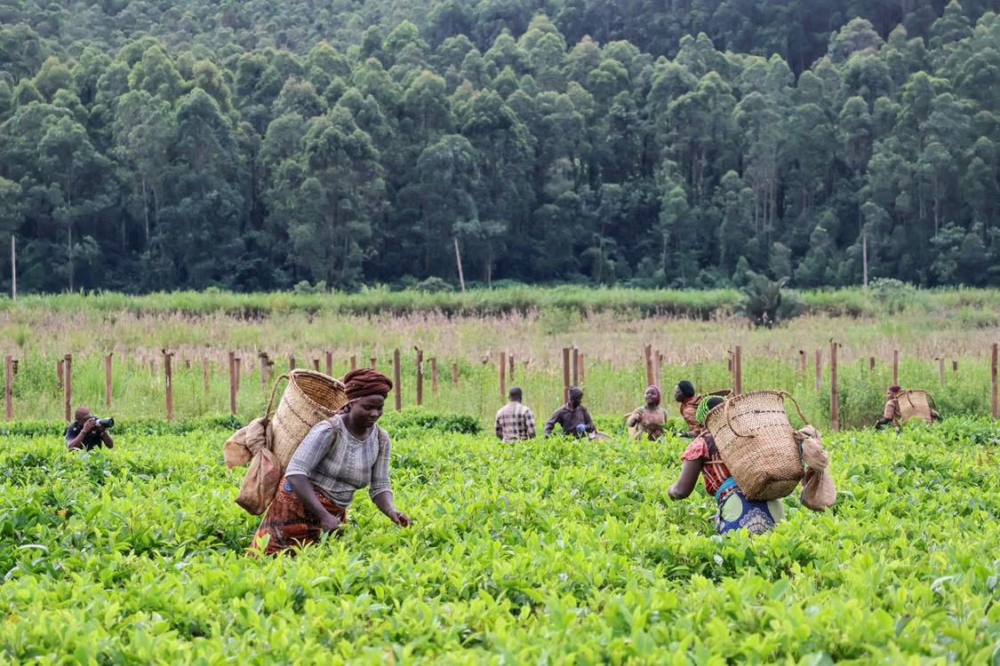

Agriculture
Growing opportunity through agriculture
Young people build practical skills and livelihoods through local agricultural enterprise.
View Project
The Twenty-First Century African Youth Movement (AYM) is a youth-serving organization working alongside unemployed and underemployed young people to build stronger communities.
Through practical learning, enterprise, and community-led programs, we help young people turn their ideas and skills into opportunity, jobs, and lasting local progress.
Learn more about AYM
Young people build practical skills and livelihoods through local agricultural enterprise.
View Project
Artists across Africa and America create and exchange work that challenges one-dimensional views of Africa, builds cross-cultural understanding, and sparks fresh thinking on shared global challenges.
View Project
A youth-led enterprise creates jobs and builds materials for growing communities.
View ProjectOur impact is built by young people turning skills, ideas, and local action into opportunity for their communities.
 Community is where progress begins
Community is where progress beginsWe harness creative talent to build a thriving creative industry that empowers young artists and creates sustainable employment.
Discover Art Projects
We cultivate sustainable agriculture and youth entrepreneurship across Africa.
Discover Our Agricultural Projects
We open pathways through practical learning, hands-on science and digital skills.
Discover Our Educational Projects
Young people build sustainable ventures that strengthen local economies.
Discover Our Entrepreneurial ProjectsCommunity-led tourism helps protect natural places while building livelihoods.
Discover Our Educational Projects
We work with communities and partners to address vital healthcare needs.
Discover Our Healthcare Initiatives
We bridge the digital divide with computer education and sustainable access.
Discover Our Technological Efforts
Mobilize local youth around environmental sustainability, education and policy advocacy.
Donate now ↗Bring your skills and energy to programs led by young people and local communities.
Join us ↗Build a local team, create jobs and grow social enterprise in your community.
Start now ↗Shop AYM goods and support youth-led programs with every purchase.
Buy now ↗AYM’s work is rooted in Mattru Jong, Sierra Leone, where local programs and youth enterprise take shape. Our United States base coordinates partnerships and resources that support the movement’s wider work.
Supported by partners who believe in power


A call for African unity, youth empowerment, and economic transformation.
Read the story
Remembering Paramount Chief Alie Badara Sheriff and his lasting community leadership.
Read the story
A partnership expands practical and technical skills for young people.
Read the story